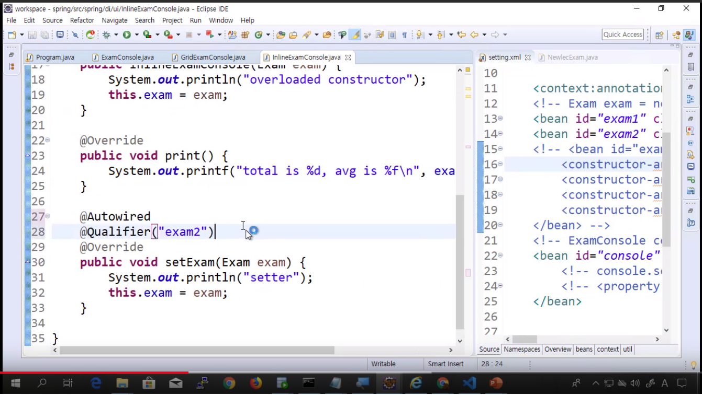

This is personal study note
Copyright and original reference are from:
www.youtube.com/watch?v=MlTk1AFMIzU
스프링 프레임워크 강의 14강 - @Autowired의 위치와 required 옵션
스프링_프레임워크_강의_14강_@Autowired의_위치와_required_옵션
================================================================================
@Autowired 는 3군데에 들어갈 수 있음
@Required 옵션
================================================================================
- setter 위에 @Autowired
================================================================================
- 필드 위에 @Autowired
- 기본생성자에서 @Autowired 와 같음
================================================================================
- 오버로드 생성자위에 @Autowired
================================================================================
- Autowired 콜 될때, 기본생성자 실행됨
================================================================================

================================================================================
 - 오버로드 생성자는 파라미터 여러개 될 수 있어서
- 각각 Qualifier 지정
- 오버로드 생성자는 파라미터 여러개 될 수 있어서
- 각각 Qualifier 지정